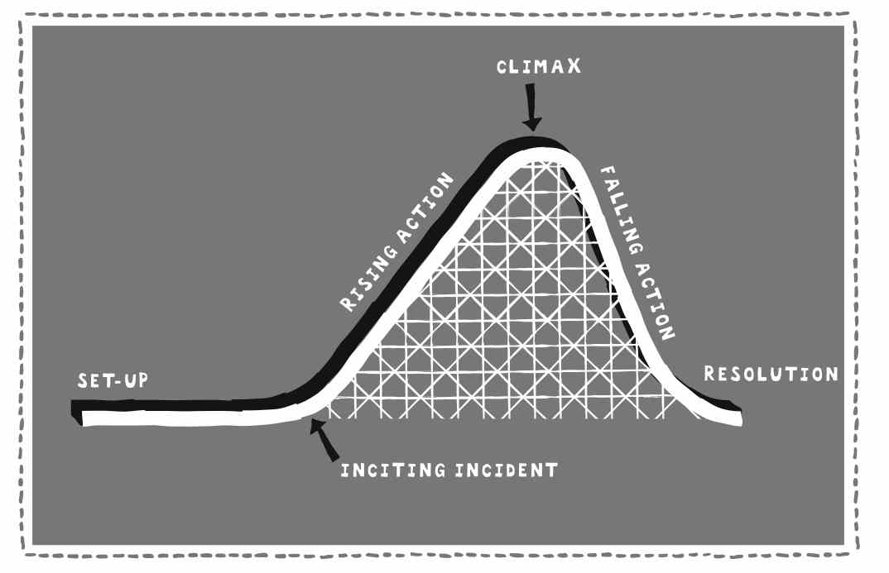

“All communication is about signal and noise. Stories are signals in the world of noise.”. This was the first key message I caught on our storytelling kick off lecture. I have always been struggling with getting my voice heard and thus been putting quite a lot of thought on this topic of signal and noise. I have been looking for the ideal world where I wouldn’t need to fight for my turns to speak or be unsure of whether my message was conveyed. I have been thinking if I could be surrounded by people who let me become heard. The more I have thought about it, the more sure I am that there is no such a thing as an ideal world. I might find my safe and appreciative environment when chatting with my closest friends or family but whenever stepping out of this limited, too-good-to-be-true zone, storytelling skills are necessarily needed to take the space and get the message conveyed - make an impact.
All communication is about signal and noise. Stories are signals in the world of noise.
It feels like I’m not the only one struggling with storytelling. After experiencing the lack of stories multiple times in various contexts, including lectures, teamwork and networking events, I have come to the conclusion that we, including me, are wasting both knowledge and skills every single time we cannot form stories out of our message. I could summarize it this way: the message is worth very little if it’s not conveyed through a good story.
Storytelling often gets mixed with chatting. There are some similarities with those two though: usually both are pleasant to listen to and relax the social atmosphere. The big difference comes in the memorability. Since the story has a structure, it activates multiple areas on the brain thus making the audience to want to listen and leaving a strong memory trace. Whereas chatting stimulates only few areas on the brain, as a result of which, the key message (if there even is one) does not create an impact nor can be remembered afterwards.
The big difference between storytelling and chatting comes in the memorability
What should the good stories be like then? A good story is like a rollercoaster. You start from the bottom and the first few meters are for warm-up, until you slowly start climbing the hill up, building the story. On the top of the hill, the excitement is at its top. Sliding down the hill brings you back to the lower level of excitement to wrap up the story.
 A good story is like a rollercoasterEven if building good stories sounds simple, it’s actually hard work. As a prove of this, at the first lecture in this course, we heard dozens of stories only a handful of which were actual stories with a structure and left me with the ‘I’m hungry to hear more’ feeling. I think the reason behind is that first of all, we are too used to just throwing the facts on the table and secondly, we rely on spontaneous storytelling skills. Referring to my first point, fact-based communication has been guiding our society for several decades and we haven’t quite adopted the new skills the modern society with enormous amount of information requires. There is much more noise around us today, due to which, you have to shout even louder to get your voice heard. And with shouting here I mean telling high-quality stories. My second point regards spontaneous storytelling skills. I strongly believe that there is no such thing as spontaneous storytelling. Of my own experience, I know that it first sounds like an insane idea to go in front of a mirror and practise such a natural skill as storytelling which we once diverged so far from. However, when you do that often enough, I guess it starts looking like you would be a natural-born storyteller.
There is much more noise around us today that you have to shout even louder to get your voice heard
To summarize, we’re living in a world of information overflow and it strongly affects our communication. It’s like when you browse the internet and open only one out of ten articles the search machine suggests. Now just apply the same to human communication. The extremely wide selection of noises you continuously hear around you sets the bar high. The only type of communication that regularly exceeds the bar are stories. I’m more than excited to learn more about this goldmine of communication over the course!